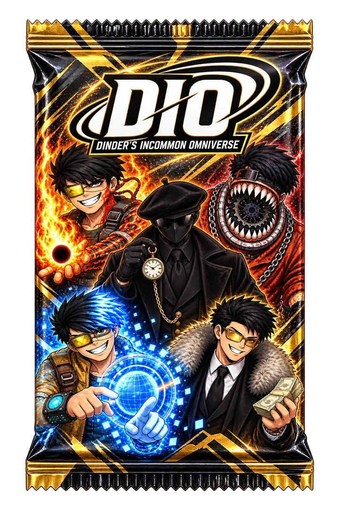

Boosters
Cinq cartes par booster : Dinders, créatures, poissons et boss de tout le DinderPad. Une rare au moins, à chaque fois.

Cinq cartes par booster : Dinders, créatures, poissons et boss de tout le DinderPad. Une rare au moins, à chaque fois.